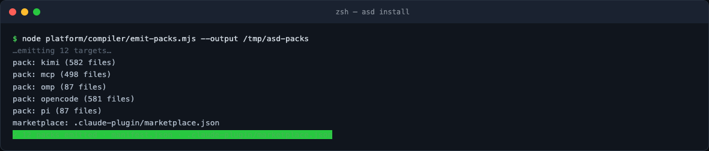
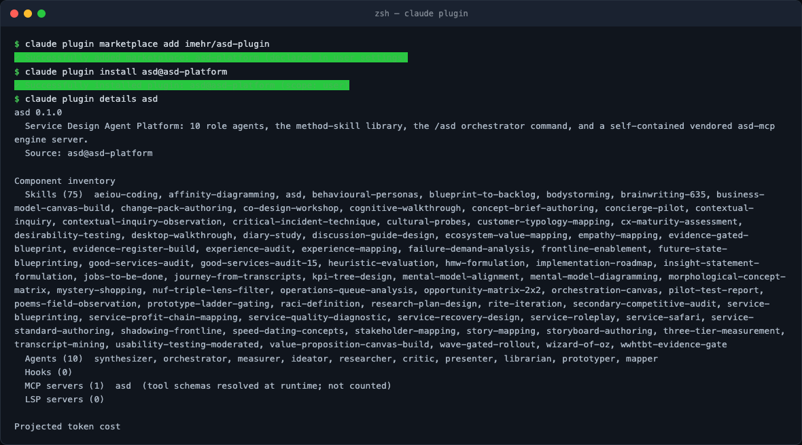

Install in five commands
The platform distributes as generated packs from two standalone repositories.
For the full Claude Code experience — ten role agents, the method-skill
library, the /asd orchestrator command, and the vendored 29-tool MCP server
— the install is:
node platform/compiler/emit-packs.mjs --output /tmp/asd-packs # from a source checkout
claude plugin marketplace add imehr/asd-plugin
claude plugin install asd@asd-platform
claude plugin details asd

The emitter writes all twelve targets (claude-code, codex, kimi, opencode,
omp, pi, grok, agy, buzz, dsh, cli, mcp) plus the marketplace manifest. For
plugin installation you only need imehr/asd-plugin on GitHub — no checkout
required:
claude plugin marketplace add imehr/asd-plugin
claude plugin install asd@asd-platform

What plugin details tells you
Read the inventory line by line — it is your install receipt:
- Skills (75) — the {{SKILLS}} method skills plus the flagship
asdskill. Each is aSKILL.mdwith name/description frontmatter that the host loads and triggers on. - Agents (10) — the role subagents: synthesizer, orchestrator, measurer, ideator, researcher, critic, presenter, librarian, prototyper, mapper.
- MCP servers (1) —
asd, wired by the plugin's.mcp.jsonto the vendored server:node ${CLAUDE_PLUGIN_ROOT}/mcp/bin/server.mjs. No PATH setup, no npm install.
The other hosts, one command each
| Host | Install |
|---|---|
| Codex CLI / desktop | cp -R codex/. <project>/ (AGENTS.md + .codex/config.toml + vendored mcp/) |
| Kimi Code | mkdir -p .kimi-code && cp -R kimi/. .kimi-code/ then trust the folder |
| OpenCode | copy agent/ → .opencode/agents, skills/ → .opencode/skills, mcp/ alongside |
| OMP / Pi | neutral trees: copy agents/, skills/ into your host's discovery paths |
| Grok / AGY | prompt adapters (grok/prompts/, agy/review-session.md) — no runtime tools |
| MCP only | the asd-mcp repo, module 03 |
Honest status: native-plugin install + vendored server boot is live-verified for Claude Code and Kimi; Codex/OpenCode wiring is structural; omp/pi/grok/agy are prompt-or-neutral by design.
Verify before you trust
echo '{"jsonrpc":"2.0","id":1,"method":"initialize","params":{"protocolVersion":"2025-06-18","capabilities":{},"clientInfo":{"name":"smoke","version":"0"}}}' \
| node ~/.claude/plugins/*/asd/mcp/bin/server.mjs 2>/dev/null | head -c 200
An initialize envelope advertising tools/resources/prompts capabilities means
the vendored engine is alive inside the plugin. claude plugin validate on a
checkout is the structural equivalent.
Hands-on lab
Install the plugin, run the initialize smoke test, and record: the plugin version, the skills count, the agents count, and the first line of the initialize response. That four-line receipt is your baseline for module 5.